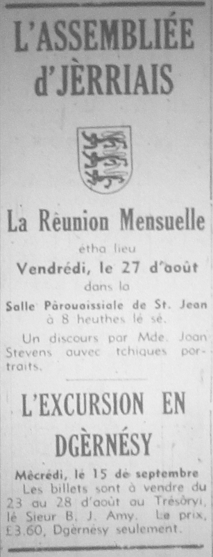

Dgèrnésy est ieune d's Îles d'la Manche. Ch'est la deuxième pus grande (auprès Jèrri). Y'a dgiêx pâraisses en Dgèrnésy, et l'île dé Dgèrnésy est eune partie du Bailliage dé Dgèrnésy.
Dgèrnésy est ieune d's Îles d'la Manche. Ch'est la deuxième pus grande (auprès Jèrri). Y'a dgiêx pâraisses en Dgèrnésy, et l'île dé Dgèrnésy est eune partie du Bailliage dé Dgèrnésy.
Coumme Jèrri, Dgèrnésy d'vînt eune île y'a des mille ans, et coumme Jèrri y'a des sites préhistoriques d'întéthêt - des pouquelayes et des longues pièrres.
Les Dgèrnésiais sont d's ânes, et y'a des mênoms pouor les cheins des difféthentes Pâraisses étout. La Ville, ch'est Saint Pièrre Port tchi n'est pon pliate coumme Saint Hélyi et y'a des ruettes et des montées. Y'a des boutiques dans la Grand' Rue et l'Pollet, et l'marchi est dans l'Haut Pavé. Mais Saint Pièrre Port n'a pon d'belles pièches coumme lé Vièr Marchi.
Y'a un châté là à Saint Pièrre Port, lé Châté Cornet, mais i' n'est pon coumme lé Châté Lîzabé car il est r'jouaint à la Ville par la caûchie. Y'a un châté étout au Valle. Coumme en Jèrri, y'a des tours par les côtes.
Y'a eune caûchie étout à Saint Samson où'est qu'i' sont l's îndustries et des mannifactuthes et la stâtion d'pouvé et tout chenna.
Géographiquement, Dgèrnésy est l'contraithe dé Jèrri (et les Dgèrnésiais sont-i' contrathiants!), car là-bas les falaises sont dans l'Sud et ch'est l'Nord tch'est pliat.
Viyiz étout:
